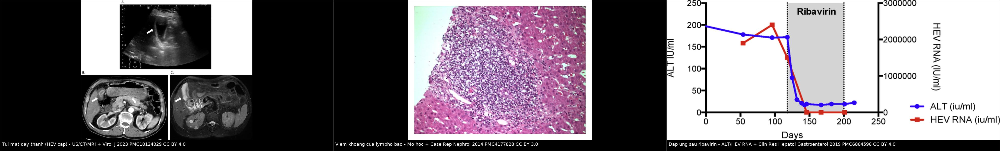
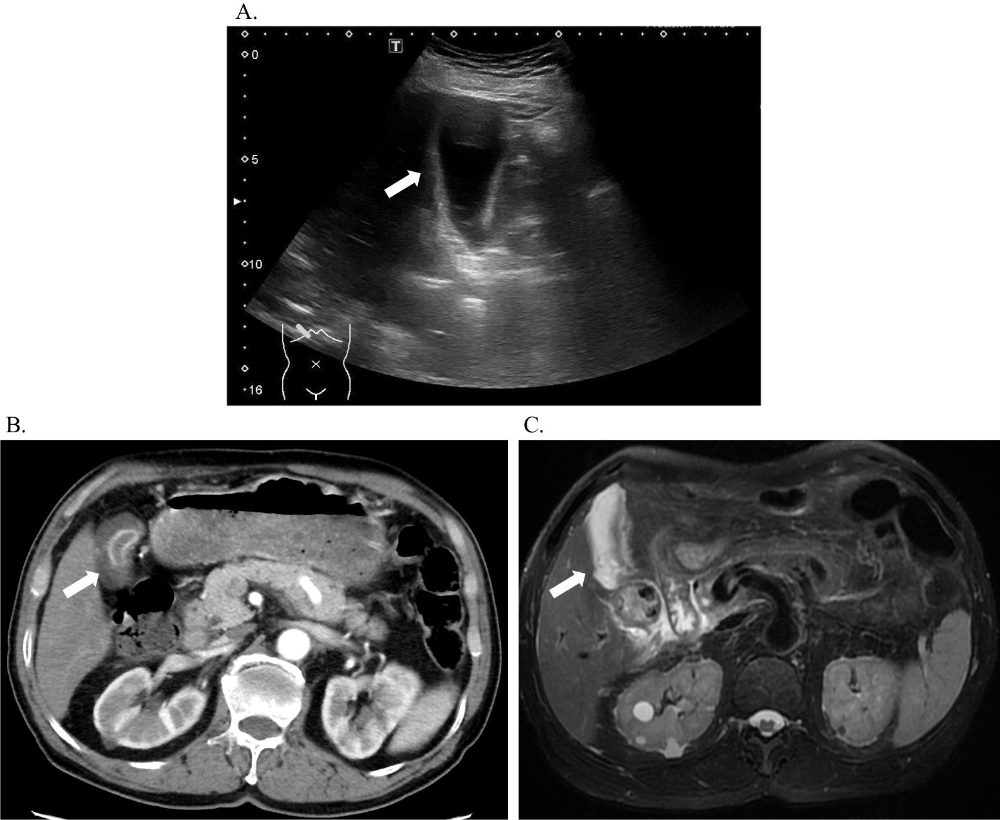
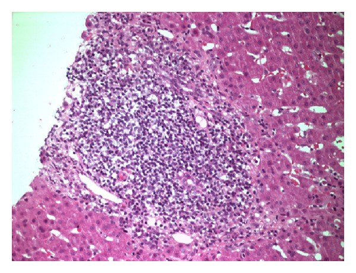
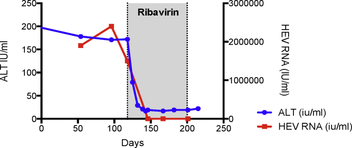

3150 — Viêm gan E mạn sau ghép gan ở trẻ: men gan tăng "không rõ nguyên nhân", HEV RNA trong PHÂN và ngưỡng ribavirin
Tags: pattern:tang-transaminase pattern:viem-gan-sau-ghep pattern:gan-to pattern:day-thanh-tui-mat pattern:xo-gan pattern:giam-ngam-nhu-mo vung:gan vung:duong-mat vung:tui-mat protocol:HEV-RNA-mau-phan protocol:sieu-am-Doppler protocol:MRCP protocol:elastography protocol:sinh-thiet-gan score:HEV-RNA score:kPa incidentaloma:khong
Mức chắc chắn (certainty): tổng hợp y văn (literature synthesis) — ghép ba nguồn có ảnh, đều là người lớn (Virol J 2023, PMC10124029; Case Rep Nephrol 2014, PMC4177828; Clin Res Hepatol Gastroenterol 2019, PMC6864596), một phân tích gộp 582 bệnh nhân (J Viral Hepat 2021, PMC7898834), hai đoàn hệ trẻ ghép gan Pháp (80 trẻ — PMID 31266724; 96 trẻ — PMID 26209371) và ca nguyên văn nhi 13 tuổi (J Clin Microbiol 2014, PMC4313334 — chỉ đọc phần tóm tắt, không có ảnh). Bài không có ca nguyên văn do nhóm tự chụp; các ca trong quiz là ca của nguồn, ghi rõ hình gốc.
Câu hỏi thực hành: bé gái 11 tuổi, ghép gan 3 năm vì teo đường mật, ALT 120–180 U/L kéo dài 8 tháng, GGT bình thường, không sốt, không vàng da. Siêu âm Doppler mảnh ghép: động mạch gan và tĩnh mạch cửa bình thường; MRCP không giãn đường mật; nồng độ tacrolimus trong đích. Bác sĩ điều trị định tăng ức chế miễn dịch vì "thải ghép mạn". Câu hỏi: có nên tăng không, và xét nghiệm nào còn thiếu? Bài chốt năm quyết định: (1) 60% người ghép tạng nhiễm HEV chuyển viêm gan mạn và 10% tiến tới xơ gan — ca nguyên văn đi từ ALT 94 U/L tới xơ gan có TE > 20 kPa trong 16 tháng; (2) chẩn đoán bằng HEV RNA trong HUYẾT THANH và PHÂN, không bằng huyết thanh học (ba bộ kit cho IgG 12% / 38% / 53% trên cùng nhóm người ức chế miễn dịch); (3) giảm ức chế miễn dịch là bước 1 (sạch virus 32%), ribavirin là bước 2 (SVR gộp 78%); (4) tăng ức chế miễn dịch khi đang nhiễm HEV là sai hướng — ca 13 tuổi được chẩn đoán sau nhiều đợt điều trị "thải ghép cấp"; (5) ở trẻ ghép gan bệnh hiếm hơn người lớn ghép thận nhưng không bằng 0 — hai đoàn hệ trẻ Pháp không có ca mạn, nhưng ca nhi có thải ghép cấp kèm HEV mạn đã được báo cáo.
1. Tổng quan bệnh học – cơ chế hình ảnh: vì sao virus "im lặng" trên siêu âm mà vẫn phá gan
- Bản chất virus: HEV là RNA virus thuộc Hepeviridae; Gt1–2 lây qua nước (ổ dịch ở nước đang phát triển), Gt3–4 lây từ động vật (thịt lợn, tạng, thịt săn chưa nấu chín) — trẻ ghép tạng ở nước phát triển hầu như chỉ gặp Gt3, và ca Gt1 ở Ấn Độ là ngoại lệ đáng nhớ (Diagn Microbiol Infect Dis 2026, PMID 42880147).
- Định nghĩa viêm gan E mạn: HEV RNA còn phát hiện được trong huyết thanh hoặc phân ≥ 3 tháng. Ngưỡng thời gian này là mốc phân biệt "nhiễm cấp tự khỏi" với "nhiễm mạn cần điều trị" — trong bài là mốc để không chờ thêm (Clin Res Hepatol Gastroenterol 2019, PMC6864596).
- Tần suất — bốn con số cần nhớ:
- 60% người ghép tạng bị nhiễm HEV chuyển thành viêm gan mạn; 10% toàn bộ người ghép tạng nhiễm HEV tiến tới xơ gan (PMC6864596).
- Yếu tố nguy cơ chuyển mạn: dùng tacrolimus và tạng được ghép là gan — nghĩa là trẻ ghép gan nằm trong nhóm nguy cơ cao nhất về mặt cơ chế (PMC6864596).
- 16 tháng là khoảng cách từ lần đầu men gan bất thường tới xơ gan xác nhận trong ca nguyên văn (ghép tim–thận, ALT khởi đầu 94 U/L, HEV RNA > 2,4 × 10⁶ IU/mL, TE > 20 kPa khi nhập khoa gan) — nhanh hơn nhiều so với viêm gan virus mạn ở người có miễn dịch bình thường (PMC6864596).
- Trẻ ghép gan: đoàn hệ 80 trẻ (Pháp, 2014–2016): HEV IgG 8% (6/80), nhưng 30% (6/20) ở nhóm từng có đợt tăng transaminase không giải thích; không em nào HEV RNA dương và không có ca viêm gan mạn (Clin Res Hepatol Gastroenterol 2020, PMID 31266724). Đoàn hệ 96 trẻ (Lyon, 2010–2013): 8,3% huyết thanh dương, không ca mạn (J Clin Virol 2015, PMID 26209371).
- Vì sao trẻ ghép gan lại hiếm ca mạn hơn người lớn ghép thận: trẻ được dùng phác đồ ức chế miễn dịch nhẹ hơn và phần lớn nhiễm HEV ở trẻ là nhiễm cấp tự khỏi; nhưng "hiếm" không đồng nghĩa "không có" — ca 13 tuổi ghép gan có ALT tăng tái diễn + thải ghép tế bào cấp được xác định HEV mạn, và ca Gt1 sau ghép gan từ người cho sống kèm PTLD EBV đã được báo cáo năm 2026 (PMC4313334; PMID 42880147).
- TẠI SAO ALT tăng từng đợt chứ không tăng liên tục — cơ chế miễn dịch: HEV không phá tế bào gan trực tiếp; tổn thương do phản ứng lympho T CD8 chống tế bào gan nhiễm virus. Khi mức ức chế miễn dịch dao động (nhiễm trùng xen kẽ, giảm liều, nồng độ tacrolimus thay đổi), phản ứng viêm bùng lên rồi lắng xuống → ALT dao động theo đợt. Hệ quả thực hành: một lần ALT bình thường giữa hai đợt không loại trừ nhiễm mạn; phải nhìn xu hướng nhiều tháng.
- TẠI SAO siêu âm/CT gần như luôn bình thường ở giai đoạn đầu: tổn thương là viêm khoảng cửa vi mô + xơ hóa dần, không tạo phù nhu mô lan tỏa hay hoại tử ổ lớn. Siêu âm chỉ đổi khi đã có xơ gan/loạn cấu trúc (bờ gan không đều, đảo phổ, lách to, dịch cổ trướng); CT/MRI chỉ đổi khi có thay đổi hình thái xơ gan. Vì vậy "siêu âm bình thường" là dữ kiện trung tính, không phải bằng chứng loại trừ.
- TẠI SAO elastography tăng nhưng không đặc hiệu: độ cứng gan (liver stiffness) tăng do xơ hóa, nhưng cũng tăng do viêm đang hoạt động và ứ mật/ứ máu. Trong ca nguyên văn, TE > 20 kPa đi kèm xơ gan thật; ở trẻ đang viêm cấp, trị số có thể cao rồi giảm sau khi virus được thanh thải — nên dùng xu hướng, không dùng một ngưỡng tuyệt đối để chẩn đoán xơ gan.
- TẠI SAO huyết thanh học không đáng tin ở người ức chế miễn dịch: sản xuất kháng thể IgM/IgG suy giảm, hiệu giá thấp và xuất hiện muộn. Nghiên cứu so sánh ba bộ kit trên người ung thư đang điều trị: IgG 12% (Euroimmun) / 38% (Wantai) / 53% (Elecsys) — đồng thuận kém (kappa mức nhẹ–trung bình) (Antibodies 2025, PMC12015928). Ngoài ra IgG truyền thụ động qua IVIG/máu có thể dương giả: trong đoàn hệ 80 trẻ, 2/6 trẻ IgG dương đã nhận IVIG trước đó và 4/6 âm lại khi kiểm tra sau 3–42 tháng (PMID 31266724).
- TẠI SAO PHÂN là mẫu bắt buộc: HEV nhân lên ở niêm mạc ruột non rồi bài tiết qua mật vào phân; RNA trong phân có thể tồn tại lâu hơn huyết thanh. Trong loạt 36 ca ghép tạng của một trung tâm, 25% thất bại điều trị đều tái phát với HEV còn trong phân tại tháng thứ 3, và mọi ca tái phát đều liên quan đến việc giảm liều ribavirin vì tác dụng phụ (PMC6864596). Đây là lý do không dừng ribavirin khi chỉ âm huyết thanh.
2. Mẫu hình + chẩn đoán phân biệt theo thời điểm và theo kiểu men gan (Gamut)
- Mẫu hình cốt lõi: trẻ ghép gan > 3–6 tháng, ALT tăng đơn độc hoặc ưu thế tế bào gan, GGT/ALP bình thường, không sốt, không vàng da, siêu âm Doppler + MRCP bình thường, không đáp ứng với tăng ức chế miễn dịch (hoặc tái phát sau mỗi lần giảm liều).
- Gamut theo thời điểm sau ghép:
- < 1 tháng: biến chứng kỹ thuật/mạch máu (huyết khối động mạch gan, hẹp tĩnh mạch cửa), thải ghép tối cấp, thiếu máu – bảo quản mảnh ghép, nhiễm khuẩn hậu phẫu.
- 1–6 tháng: thải ghép tế bào cấp (TCMR), thải ghép thể dịch, CMV/EBV, hẹp miệng nối đường mật, DILI (kháng sinh, kháng nấm, thuốc chống thải ghép).
- > 6 tháng: viêm gan E mạn, viêm gan tự miễn de novo, PTLD, tái phát bệnh gan gốc (viêm gan B/C nếu có), hẹp đường mật muộn, bệnh mạch ghép tiến triển.
- Gamut theo kiểu men gan (quyết định bước hình ảnh):
- Tế bào gan (ALT > 2 × ULN, ALP/GGT bình thường): HEV, TCMR, viêm gan tự miễn, DILI, CMV/EBV/adenovirus, thiếu máu cục bộ.
- Cholestatic (GGT/ALP ưu thế): hẹp miệng nối đường mật, sỏi/ứ mật, viêm túi mật không sỏi do HEV, DILI.
- Hỗn hợp: thải ghép + nhiễm trùng, hẹp mật + viêm gan.
- Mnemonic "DAMN" cho trẻ ghép gan có men gan tăng: Drug (DILI, thuốc chống thải ghép), Alloimmune (TCMR, thể dịch, tự miễn de novo), Microbe (HEV, CMV, EBV, adenovirus), Neoplastic/Mechanical (PTLD, hẹp mật, biến chứng mạch). HEV nằm ở chữ M — nhưng là chữ M duy nhất có điều trị đặc hiệu bằng ribavirin.
- Ba câu hỏi đọc ca: (1) men gan kiểu gì? (2) Doppler mảnh ghép và MRCP có bất thường không? (3) đã làm HEV RNA huyết thanh VÀ phân chưa? Nếu (1) tế bào gan, (2) bình thường, (3) chưa → câu trả lời nằm ở phòng xét nghiệm, không ở phòng siêu âm.
3. Bảng so sánh phân biệt (ma trận đối chiếu)
| Thực thể (entity) | Hình ảnh / xét nghiệm điển hình | Chốt vào (rule-in) | Chốt loại (rule-out) | Gợi ý xác nhận |
|---|---|---|---|---|
| Viêm gan E mạn | Siêu âm/CT bình thường giai đoạn đầu; muộn: gan bờ không đều, lách to, TE tăng; mô học viêm khoảng cửa lympho bào | HEV RNA (+) huyết thanh hoặc phân ≥ 3 tháng; ALT dao động nhiều tháng; không có nguyên nhân khác | HEV RNA âm cả huyết thanh và phân ở 2 lần cách nhau ≥ 4 tuần → ít khả năng | RT-PCR huyết thanh + phân; nhuộm HEV/HMMD trong mô nếu sinh thiết |
| Thải ghép tế bào cấp (TCMR) | Siêu âm bình thường hoặc gan to, phù quanh cửa; không khuyết thuốc | Sinh thiết: thâm nhiễm khoảng cửa + viêm ống mật + nội mô (Banff); đáp ứng với corticoid/tăng ức chế miễn dịch | HEV RNA (+) hoặc sinh thiết không có tổn thương ống mật/nội mô → không phải TCMR đơn thuần | Sinh thiết + C4d/DSA nếu nghi thể dịch |
| Viêm gan tự miễn de novo | Gan to, phù quanh cửa; không có tổn thương đường mật; TE có thể tăng | ANA/SMA dương, IgG tăng, sinh thiết có viêm mảng xơ hóa, đáp ứng corticoid | HEV RNA (+), kháng thể âm, không đáp ứng corticoid | Sinh thiết + tự kháng thể; loại trừ virus trước khi tăng ức chế miễn dịch |
| DILI (kháng sinh, kháng nấm, thuốc chống thải ghép) | Siêu âm bình thường; có thể dày thành túi mật, gan to nhẹ | Thời gian khớp thuốc mới, eosinophilia, giảm sau ngừng thuốc | Virus (+) hoặc sinh thiết có viêm khoảng cửa không điển hình DILI | Ngừng thuốc nghi ngờ, theo dõi men gan 2–4 tuần |
| Hẹp miệng nối đường mật | Giãn đường mật trong gan, dày thành ống mật, tắc mật trên MRCP | Giãn mật + chỗ hẹp trên MRCP, cấy mật (+) nếu có can thiệp | MRCP không giãn, GGT bình thường → không phải nguyên nhân chính | MRCP; ERCP/PTC khi cần can thiệp |
| Viêm gan CMV / EBV / adenovirus | Siêu âm bình thường hoặc gan to; tổn thương không đặc hiệu | PCR máu/mô (+), thể vùi trong sinh thiết, hóa mô miễn dịch (+) | PCR âm + không thể vùi → không phải | PCR định lượng; sinh thiết + IHC |
| Biến chứng mạch ghép (HAT, hẹp tĩnh mạch cửa) | Mất phổ / tăng tốc tại miệng nối trên Doppler; CTA khuyết thuốc | Bất thường Doppler/CTA ở miệng nối, thiếu máu nhu mô vùng | Doppler + CTA bình thường → loại trừ nguyên nhân mạch lớn | Doppler, CTA; đo gradient nếu hẹp |

Trái: viêm túi mật không sỏi trong HEV cấp — siêu âm (a) thành túi mật dày (mũi tên trắng), CT (b) và MRI (c) xác nhận (Virol J 2023, PMC10124029, CC BY 4.0). Giữa: mô học gan — khoảng cửa thâm nhiễm lympho bào dày đặc, viêm bờ múi nhẹ (Case Rep Nephrol 2014, PMC4177828, CC BY 3.0). Phải: ALT và HEV RNA trước/trong/sau ribavirin (Clin Res Hepatol Gastroenterol 2019, PMC6864596, CC BY 4.0). Ba ảnh từ ba bệnh nhân khác nhau, không phải một ca; ảnh ghép letterbox, giữ nguyên khung và nhãn của tác giả.Đọc kỹ ba mẫu hình
- Dày thành túi mật không phải viêm túi mật do sỏi: trong 114 ca HEV cấp, 57,9% có viêm túi mật không sỏi trên hình ảnh; nhóm này nằm viện 20,1 ± 9,4 ngày so với 13,0 ± 7,3 ngày, và viêm phúc mạc nguyên phát 9,1% so với 0% (Virol J 2023, PMC10124029). Đây là dấu hiệu của bệnh nặng hơn, không phải chỉ định cắt túi mật.
- Viêm khoảng cửa lympho bào là hình thái chung, không phải chữ ký của HEV: cùng mô học gặp ở TCMR, viêm gan tự miễn và DILI. Giá trị của sinh thiết là loại trừ và lấy mô để PCR/IHC HEV, không phải "nhìn ra HEV".
- Đường cong ALT/HEV RNA sau ribavirin là bằng chứng đáp ứng: cả hai giảm song song trong 2–3 tuần; nếu ALT giảm mà HEV RNA trong phân còn dương, chưa được coi là khỏi.
4. Protocol chụp + ngưỡng xử trí
- Bước 1 — Phân loại men gan và loại trừ nguyên nhân cấp cứu (ngày 0):
- ALT/ALP/GGT, bilirubin, INR, albumin; doppler mảnh ghép (động mạch gan: RI, phổ; tĩnh mạch cửa: vận tốc, hướng), siêu âm đường mật.
- Ngưỡng loại trừ mạch: mất phổ động mạch gan hoặc tĩnh mạch cửa → CTA cấp (bài 1861/1909), không chờ.
- Ngưỡng loại trừ mật: GGT/ALP tăng + giãn đường mật → MRCP (bài 3011/1909); không giãn + GGT bình thường → ưu tiên nguyên nhân nhu mô.
- Bước 2 — Xét nghiệm HEV (bắt buộc, song song):
- HEV RNA RT-PCR huyết thanh VÀ phân — không thay bằng huyết thanh học. Nếu PCR âm nhưng nghi ngờ cao: lặp lại sau 4 tuần, và PCR trên mô sinh thiết.
- Huyết thanh học chỉ để tham khảo: IgM/IgG âm không loại trừ; IgG dương không xác nhận (IVIG, kit khác nhau).
- Định nghĩa mạn: RNA (+) ≥ 3 tháng → chỉ định điều trị, không chờ thêm.
- Bước 3 — Sinh thiết gan khi: PCR âm mà ALT vẫn tăng, hoặc cần phân biệt TCMR/viêm gan tự miễn, hoặc trước khi tăng ức chế miễn dịch. Gửi mô làm HEV RNA/IHC, CMV/EBV IHC, C4d, trichrome/Sirius red đánh giá xơ hóa.
- Bước 4 — Điều trị theo bậc (quan trọng: đừng đảo thứ tự):
- Giảm ức chế miễn dịch có kiểm soát (hạ nồng độ đích tacrolimus, giảm/ngừng MMF nếu an toàn): sạch virus 32% (55/174) trong phân tích gộp (J Viral Hepat 2021, PMC7898834). Theo dõi sát thải ghép.
- Ribavirin nếu còn RNA sau 3 tháng giảm ức chế miễn dịch, hoặc có tổn thương gan đáng kể: người lớn 600 mg/ngày, trẻ dùng liều theo cân nặng và chức năng thận, 3 tháng; SVR gộp 78% (95% CI 72–84) trên 395 bệnh nhân; RVR 25%, tái phát 18%, thiếu máu 37% dẫn tới giảm liều/truyền máu (PMC7898834).
- Tái phát sau 3 tháng → ribavirin 6 tháng: SVR 76% (39/51) ở lần điều trị thứ hai (PMC7898834). Không giảm liều ribavirin vì thiếu máu mà không có kế hoạch — đây là nguyên nhân tái phát trong loạt 36 ca (PMC6864596) và là cơ chế chọn đột biến kháng G1634R.
- Thất bại ribavirin ở người ghép gan: cân nhắc peg-IFN-α (SVR 85% trong 13 ca) nhưng thải ghép cấp 15% (2/13) — chống chỉ định ở ghép tim/phổi/thận/tụy (PMC7898834). Các lựa chọn ít dữ liệu: sofosbuvir phối hợp, giảm ức chế miễn dịch sâu hơn.
- Bước 5 — Theo dõi:
- Hb mỗi 1–2 tuần trong tháng đầu ribavirin (ngưỡng can thiệp theo trung tâm; thiếu máu là lý do giảm liều thường gặp).
- HEV RNA huyết thanh + phân tại tháng 3, và 6 tháng sau khi ngừng để xác định SVR. Phân âm mới được coi là sạch trước khi dừng thuốc.
- Elastography mỗi 6–12 tháng sau khi virus âm: dùng xu hướng kPa, không chẩn đoán xơ gan bằng một lần đo khi còn viêm.
- Siêu âm Doppler mảnh ghép theo lịch ghép gan định kỳ; MRCP chỉ khi GGT/ALP tăng hoặc có giãn mật.
flowchart TD
A[ALT tang don doc sau ghep gan > 3-6 thang] --> B[Doppler manh ghep + sieu am duong mat]
B --> C{Bat thuong mach hoac gian mat?}
C -->|Co| D[CTA hoac MRCP - xu ly nguyen nhan co hoc]
C -->|Khong| E[HEV RNA huyet thanh VA phan]
E --> F{HEV RNA duong?}
F -->|Co| G{Keo dai >= 3 thang?}
G -->|Co| H[Viem gan E man]
G -->|Khong| I[Theo doi 4 tuan - lap PCR]
F -->|Khong| J[PCR mo sinh thiet + tim CMV EBV DILI]
H --> K[Buoc 1: giam uc che mien dich co kiem soat]
K --> L{RNA con duong sau 3 thang?}
L -->|Co| M[Ribavirin 3 thang - theo doi Hb]
L -->|Khong| N[SVR - theo doi elastography]
M --> O{Phan con duong luc 3 thang?}
O -->|Co| P[Ribavirin 6 thang - khong giam lieu vi thieu mau]
O -->|Khong| N
5. Biến thể bình thường và cạm bẫy
- Bẫy 1 — "Huyết thanh học âm là loại trừ": ở người ức chế miễn dịch, IgM/IgG âm vẫn có thể đang nhiễm, và ba bộ kit cho ba tỷ lệ khác nhau (12% / 38% / 53%) (PMC12015928). Luôn làm PCR.
- Bẫy 2 — IgG dương do truyền thụ động: 2/6 trẻ IgG dương đã nhận IVIG trước xét nghiệm và 4/6 âm lại sau 3–42 tháng (PMID 31266724). Hỏi kỹ truyền máu/IVIG trong 3 tháng trước đó.
- Bẫy 3 — ALT bình thường giữa các đợt: dao động là bản chất của tổn thương qua miễn dịch; một lần bình thường không loại trừ, phải nhìn chuỗi nhiều tháng.
- Bẫy 4 — Tăng ức chế miễn dịch khi đang nhiễm HEV: ca 13 tuổi được chẩn đoán HEV mạn sau ALT tăng tái diễn và thải ghép tế bào cấp — nghĩa là trước đó đã được điều trị như thải ghép (PMC4313334). Tăng ức chế miễn dịch làm kéo dài tình trạng nhiễm và đẩy nhanh xơ hóa.
- Bẫy 5 — Dày thành túi mật bị đọc thành viêm túi mật/viêm đường mật: gặp ở 57,9% ca HEV cấp; không đặt stent, không cắt túi mật chỉ vì hình ảnh (PMC10124029).
- Bẫy 6 — Elastography cao bị đọc thành xơ gan: viêm đang hoạt động làm tăng độ cứng; đo lại sau khi virus âm. Ngược lại, TE bình thường không loại trừ xơ hóa sớm.
- Bẫy 7 — Giảm liều ribavirin vì thiếu máu rồi coi là "thất bại điều trị": 37% bệnh nhân thiếu máu phải giảm liều/truyền máu; 25% thất bại trong loạt 36 ca đều do giảm liều và đều còn virus trong phân tháng thứ 3 (PMC7898834; PMC6864596). Kế hoạch đúng: theo dõi Hb, bù sắt/EPO, truyền máu nếu cần, giữ liều hiệu quả, không tự hạ liều.
- Bẫy 8 — Bỏ sót nhiễm Gt1 và đường lây khác: trẻ sinh ở vùng dịch tễ hoặc có người cho từ vùng dịch tễ có thể nhiễm Gt1 (ca 2026 ở Ấn Độ), không chỉ Gt3 từ thịt lợn (PMID 42880147).
- Bẫy 9 — Không phân biệt "nhiễm cấp tự khỏi" với "nhiễm mạn": thiếu mốc 3 tháng dẫn tới điều trị sớm không cần thiết hoặc chờ quá lâu ở trẻ đã có xơ hóa.
6. Tự lượng giá — Blind Quiz
Ca 1 — Trẻ ghép gan 3 năm, ALT 150 U/L, GGT bình thường, siêu âm bụng có hình dưới. Nhìn ảnh trước, mô tả sau.

- Gợi ý: không đau hạ sườn phải, không sỏi trên siêu âm.
- Câu hỏi: Dấu hiệu chính là gì? Nó gợi ý chẩn đoán nào, và hai việc không được làm vì hình ảnh này?
Bấm để hiện đáp án (findings + chẩn đoán)
- Dấu hiệu: thành túi mật dày rõ trên siêu âm (a, mũi tên trắng); CT (b) và MRI (c) xác nhận viêm túi mật không sỏi. Trong HEV cấp, dấu hiệu này gặp 57,9% (66/114), đi kèm thời gian nằm viện dài hơn (20,1 so với 13,0 ngày) và viêm phúc mạc nguyên phát 9,1% so với 0%.
- Chẩn đoán: viêm túi mật không sỏi do HEV — dấu hiệu của bệnh nặng hơn, không phải bệnh túi mật nguyên phát.
- Hai việc không làm: không cắt túi mật và không đặt stent/ERCP chỉ vì dày thành túi mật khi không có sỏi/tắc mật; điều trị là hỗ trợ + xử lý HEV.
- Nguồn: Virol J 2023 (PMC10124029), CC BY 4.0. Ảnh từ hai bệnh nhân khác nhau trong bài gốc (a: ca 1; b, c: ca 2).
Ca 2 — Cùng bệnh nhi, sinh thiết gan vì ALT tăng kéo dài. Nhìn ảnh trước, mô tả sau.

- Câu hỏi: Mô học này chẩn đoán được HEV không? Nếu không, sinh thiết dùng để làm gì trong bệnh cảnh này?
Bấm để hiện đáp án (findings + chẩn đoán)
- Dấu hiệu: khoảng cửa thâm nhiễm lympho bào dày đặc, viêm bờ múi nhẹ; thấy tĩnh mạch cửa, động mạch gan và ống mật trong thâm nhiễm (H&E, ×20).
- Trả lời: không chẩn đoán được HEV bằng hình thái — cùng kiểu thâm nhiễm gặp ở TCMR, viêm gan tự miễn, DILI. Sinh thiết dùng để (1) loại trừ thải ghép/tự miễn, (2) lấy mô làm HEV RNA/IHC, (3) đánh giá xơ hóa (trichrome/Sirius red).
- Nguồn: Case Rep Nephrol 2014 (PMC4177828), CC BY 3.0 — bệnh nhân ghép thận, không phải trẻ ghép gan; dùng làm ví dụ hình thái.
Ca 3 — Bệnh nhân HEV mạn, HEV RNA 2,4 × 10⁶ IU/mL, bắt đầu ribavirin. Nhìn biểu đồ trước, mô tả sau.

- Câu hỏi: Hai đường biểu diễn là gì? Vì sao không được dừng ribavirin ngay khi ALT về bình thường?
Bấm để hiện đáp án (findings + chẩn đoán)
- Dấu hiệu: ALT (xanh) và HEV RNA (đỏ) cùng giảm sâu trong 2–3 tuần sau khi bắt đầu ribavirin; ALT về ~20 U/L, HEV RNA về 0.
- Vì sao không dừng sớm: ALT bình thường không đồng nghĩa hết virus trong phân; HEV còn trong phân lúc 3 tháng dự báo tái phát, và 25% ca thất bại trong loạt 36 ca đều do giảm liều ribavirin vì thiếu máu. Phải đủ 3 tháng và âm cả huyết thanh lẫn phân rồi mới xét dừng; tái phát → 6 tháng.
- Nguồn: Clin Res Hepatol Gastroenterol 2019 (PMC6864596), CC BY 4.0.
Bài liên quan chéo
- 1945 – Viêm gan tự miễn de novo sau ghép gan ở trẻ (đối thủ chính của HEV khi ALT tăng đơn độc)
- 1916 – Thải ghép tế bào cấp sau ghép gan (bẫy "tăng ức chế miễn dịch")
- 1917 – Thải ghép thể dịch sau ghép gan (DSA, C4d)
- 1918 – Nhiễm CMV sau ghép gan ở trẻ (cùng kiểu "men gan tăng, hình ảnh bình thường")
- 1933 – Viêm gan adenovirus sau ghép gan ở trẻ (virus khác, cùng khung chẩn đoán)
- 1909 – Hẹp tĩnh mạch cửa sau ghép gan (loại trừ nguyên nhân mạch)
- 3011 – Biến chứng niệu quản sau ghép thận (khung "biến chứng muộn sau ghép" — chỉ tham khảo cách lập luận)
Ảnh
images/3150_hev_day-thanh-tui-mat_US-CT-MRI_PMC10124029.jpg— siêu âm + CT + MRI túi mật trong HEV cấp, Virol J 2023 (PMC10124029), CC BY 4.0.images/3150_hev_viem-khoang-cua_Mo-hoc_PMC4177828.jpg— mô học gan, Case Rep Nephrol 2014 (PMC4177828), CC BY 3.0.images/3150_hev_dap-ung-ribavirin_Bieu-do_PMC6864596.jpg— ALT/HEV RNA trước–trong–sau ribavirin, Clin Res Hepatol Gastroenterol 2019 (PMC6864596), CC BY 4.0.images/composite_hev-sau-ghep-gan.jpg— ảnh ghép letterbox 3 ảnh trên, CC BY 4.0 / CC BY 3.0 theo từng ô.- Nguồn, giấy phép và ghi chú phái sinh từng ảnh:
images/CREDITS.md.
Không dùng để chẩn đoán độc lập khi chưa có người hướng dẫn.